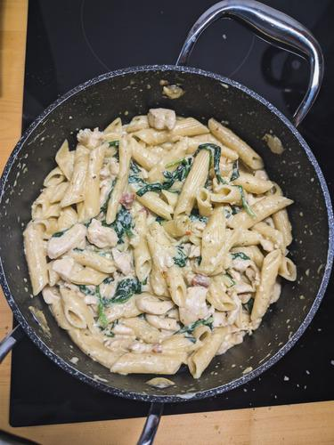

Pesto Chicken Pasta

Description
This super lush and Creamy Pesto Chicken Pasta is perfect for
busy weeknights. Everything cooks in one pot and is done in
under 30 minutes!
Ingredients
- 1 lb. boneless, skinless chicken breast
- 2 Tbsp butter
- 2 cloves garlic
- 1/2 lb. penne pasta
- 1.5 cups chicken broth
- 1 cup milk
- 3 oz. cream cheese
- 1/3 cup basil pesto
- 1/4 cup grated Parmesan
- freshly cracked pepper
- 1 pinch crushed red pepper
- 3 cup fresh spinach
- 1/4 cup sliced sun dried tomatoes